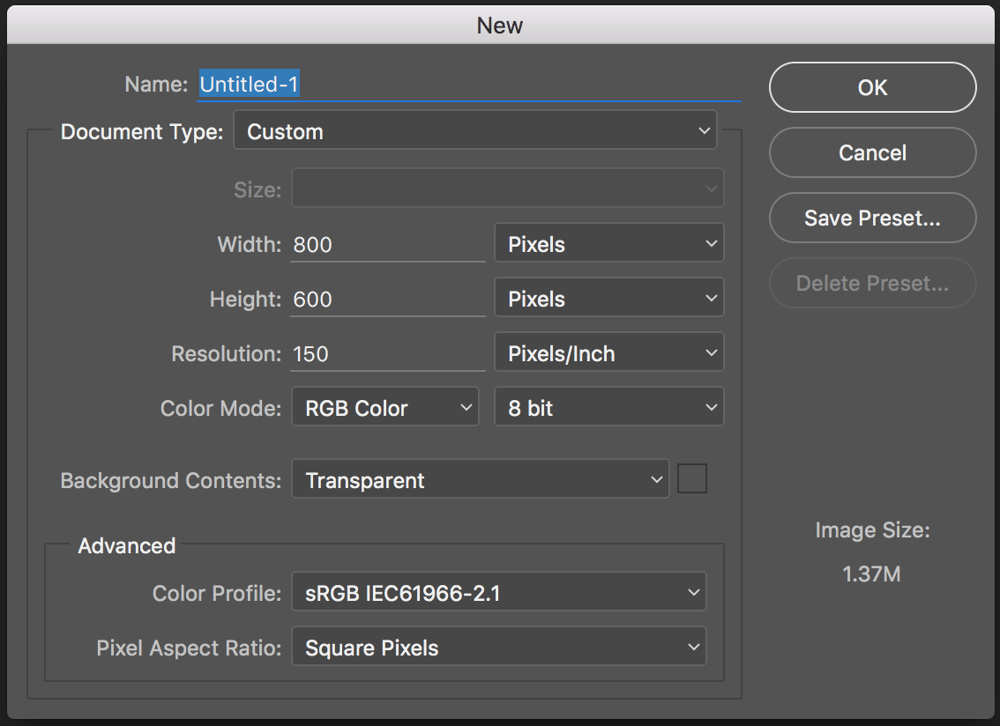

Welcome to Photoshop!
Part 1: Adobe Photoshop
Part 2: Adobe Illustrator
--Part 3: Sketch
Photoshop Topics
- Why Photoshop?
- Setting up your workspace
- Layer organization
- Image Manipulation
- "The New Stuff"
REMEMBER:
- This is a survey of a very complex, multi-use program
- I don't know everything, and neither will you
- Have fun! Get messy! Ask questions!
"Fancy" Photoshop Lingo
PSD:
The file extension for a Photoshop files.
Why Photoshop?
Raster vs. Vector
Raster:
- Dot-based
- Dots = pixels (sometimes)
- Cannot resize without quality loss
- Photoshop
Vector:
- Math-based (!)
- Uses geometry to create graphics (!)
- Infinitely resize while maintaining quality
- SVG, EPS
- Illustrator
Photoshop Alternatives
It's kind of hard to get away from Photoshop but some people do! They use:
- Illustrator
- Sketch
- InDesign
- HTML and CSS right in the browser ("designing in the browser")
- Web-based prototyping tools (InVision, Adobe's Edge suite)
- Gimp (popular open source alternative)
Getting Around Photoshop
Units & Settings
Preferences
Under the Photoshop menu.
- Units & Rulers
- Guides & Grid
Toolbar
Panels
Workspaces
are...
Saved arrangements of:
- tools
- tool panels
- keyboard shortcuts
- menus
Window > Workspace
Let's Develop It! 💻

Take a few minutes to customize your workspace
Creating and working with actual FILES!
But first...
Shortcuts!

New Files
Grids & Guides
- Grid systems (tons of downloads online)
- Bootstrap 12-column grid systems
- Smart guides
Layer Organization
- Group and group some more
- Use clear names
- Get rid of the cruft
- Consolidate, within reason
- Repeat
Next up...
Image manipulation in 5 slides!
1. Effects
2. Smart Objects
They're your friends
3. Placing images
4. Blending modes
5. Layer masks
- Avoids destructive editing
- Make sure you select the mask when editing
- White vs. Black brush
- Lots more. Google's your friend!
The really exciting stuff
New features in CC 2017:
- Artboards!
- Exporting from layers
Artboards
What's the big deal?
- Good for web comps
- Device sizes baked in
- Better than switching between files
Exporting from Layers
What's the big deal?
- Save in all formats and sizes
- No more slicing!
- NO MORE SLICING!